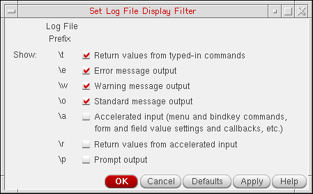
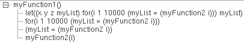
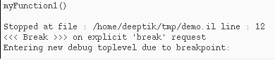
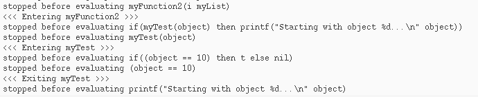

6
Walkthrough
The sample program used in this chapter is designed to illustrate the various features of the SKILL IDE debugger. In this chapter, you learn how to use the SKILL IDE tool to analyze and debug a program to improve its performance.
This chapter is organized into the following sections:
Copying the Example File
The following
<your_install_dir>/tools/dfII/samples/skill/demo.il
To copy this demo file for the walkthrough, do the following:
-
Make a temporary directory in your current working directory:
mkdir tmp
-
Change directory to your new temporary directory:
cd tmp
-
Copy the demo file from the Cadence installation hierarchy:
cp <
your_install_dir>/tools/dfII/samples/skill/demo.il . -
In your CIW, choose Options – Log Filter.
The Set Log File Display Filter form appears.
 - Verify the settings as shown above.
The demo file, demo.il has the following contents:
/* demo.il - This file is used for a walkthrough of the
* SKILL Development Environment.
*/
/*******************************************************
* myFunction1 - This function must
* Count from 1 to 10000.
* Return a list of numbers from 1 to 1000 in any order.
********************************************************/
(procedure myFunction1()
let((x y z myList)
for( i 1 10000
myList = myFunction2(i)
)
myList
)
)
/*******************************************************
* myFunction2 - This function must
* Print a starting message on the 1st object.
* Print an ending message at the 1000th object.
* Return a list of numbers less than 1000 in any order.
********************************************************/
(procedure myFunction2(object myList)
if(myTest(object)
then printf("Starting with object %d...\n" object)
)
if(object == 1000
then printf("Ending with object %d...\n" object)
)
if(object < 1000
then append(myList ncons(object ))
else myList
)
)
/*******************************************************
* myTest - This function must
* return t if object equals one.
********************************************************/
(procedure myTest(object)
if(object == 10
then t
else nil
)
)
Loading and Running the Example File
-
Click
or choose File – Open and Load from the SKILL IDE menu bar. The Open File dialog box displays, listing all the available files.
Browse to locate the tmp directory and click Open. The Top-Level number, #1, displays in the status bar. -
Type the following in the CIW:
myFunction1()
An error message displays in the message area of the CIW.You can also runmyFunction1()from the Debug menu or Edit toolbar. For more information, see Executing a Function
Tracing the Error
The error message that displays in CIW indicates that myFunction2 expects two arguments and only one argument is passed:
***Error in routine myFunction2:
Message: *Error* myFunction2: too few arguments (2 expected, 1 given) - (1)
The debugger stops at line number 12 and highlights it in red:
myList = myFunction2(i)
Examining the Call Stack to Trace the Error
To find which function called myFunction2 with the wrong number of arguments, do the following:
-
Choose Window – Assistants – Stack. The Stack assistant displays the current call stack.
The call toerrorHandleris at the bottom of the call stack frame; the call tomyFunction1is at the top. - Click or choose Debug – Stop All Debugging to terminate debugging.
Correcting the Error
To correct the call to myFunction2, do the following:
-
Review the definition of
myFunction2.Notice that it requires a second argument,myList:(procedure myFunction2(object myList)
-
Change the
myFunction2function call in theforloop inmyFunction1accordingly:
myList = myFunction2(i)
myList = myFunction2(i myList)
-
Click
to load the edited file.
The following messages display in the CIW:function myFunction1 redefined function myFunction2 redefined function myTest redefined
Using Breakpoints to Find and Correct a Functional Error
To find the next error, execute myFunction1 that you modified in the Correcting the Error section:
-
In the CIW, type
myFunction1
The following output displays in the CIW:Starting with object 10... Ending with object 1000... (1 2 3 4 5 6 7 8 9 10 ... 996 997 998 999 )
The starting object is 10 instead of 1. This is a functional error.
Let us use breakpoints to identify the source of the error.
-
In the source code pane, click the following line:
myList = myFunction2(i)
Choose Debug – Set/Modify Conditional Breakpoint. The Set Conditional Breakpoint (Line) dialog box displays. -
In the Break on condition field, type
i==10.
As a result, the program will pause when the value ofiequals to 10. - Click OK.
To execute myFunction1 and single-step from the conditional breakpoint you have set (i==10), do the following:
-
In the CIW, type
myFunction1()
Wheniequals 10, a breakpoint message displays in the CIW.
 -
In SKILL IDE, click
or choose Debug – Step five times.
The following messages display in the CIW:
Single-stepping through the program shows thatmyFunction2callsmyTestwith a value of 10.myTestreturnstif the value passed to it is equal to 10. However,myTestshould returntif the value is equal to 1. - In SKILL IDE, click or choose Debug – Stop All Debugging.
Make the following correction in myTest:
-
In the source code pane, change the erroneous line in
myTestas follows:
if(object == 10
if(object == 1
-
Click
to load the edited file.
The following messages display in the CIW:function myFunction1 redefined function myFunction2 redefined function myTest redefined
To verify the problem has been fixed, do the following:
-
In the CIW, type
myFunction1()
The following output displays in the CIW:Starting with object 1... Ending with object 1000... (1 2 3 4 5 6 7 8 9 10 ... 996 997 998 999 )
The starting object is 1. You now have a working program.
Return to top